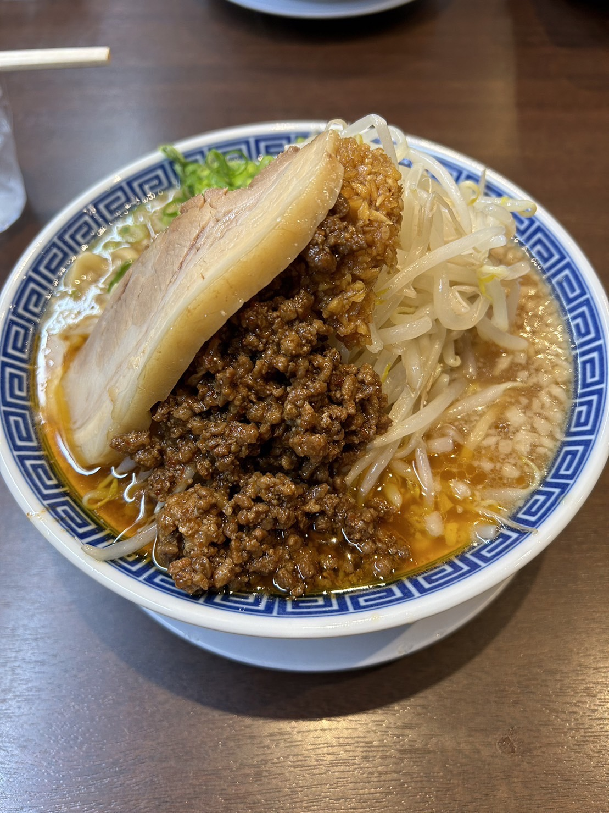
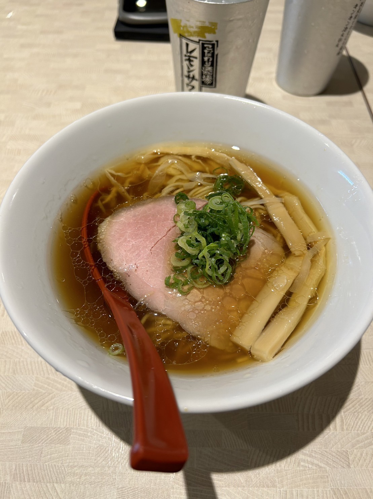
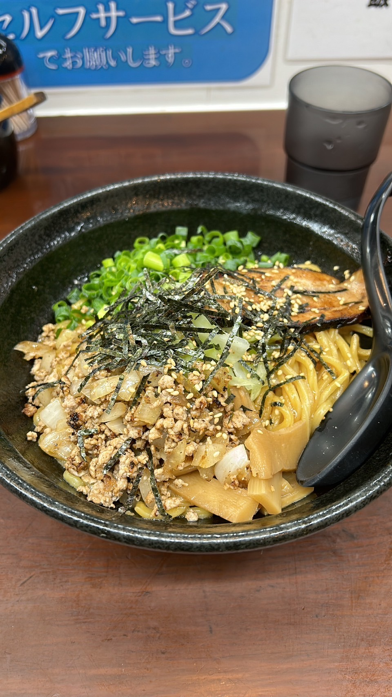

| 特徴 | JR津田沼駅から徒歩３分の場所にあり、ピーク時間帯にはいつも行列ができています。 野菜ニンニクたっぷりの二郎系ラーメン！ ニンニク抜きもできるので、女性の方も安心です。 |
| 住所 | 274-0825 千葉県船橋市前橋西２丁目4-10 |
| 電話番号 | 047-474-4287 |
| 営業時間 | 火～日 11:00-22:00 月 定休日 ＊(ラストオーダー閉店30分前) |

| 特徴 | JR津田沼駅から徒歩４分の場所にあり、８月にオープンしたばかり。 あっさり系のラーメン屋で、こってりしたラーメンが苦手な人におすすめ。 お酒のあとの締めのラーメンにぴったりです。 |
| 住所 | 274-0825 千葉県船橋市前橋西２丁目13-1 |
| 電話番号 | 047-411-9582 |
| 営業時間 | 日～土・祝日 18:00-2:30 ＊(ラストオーダー閉店30分前) |

| 特徴 | JR津田沼駅から徒歩５分の場所にあり、深夜にはよく行列ができる人気店。 こってり系のとんこつラーメンが看板メニューで、22時以降の限定メニューもあります。 一杯830円で食べれるため、金欠な方にもおすすめ。 |
| 住所 | 274-0825 千葉県船橋市前橋西２丁目25-7 |
| 電話番号 | 047-406-5669 |
| 営業時間 | 月～日・祝日 11:00-1:00 ＊(ラストオーダー閉店30分前) |